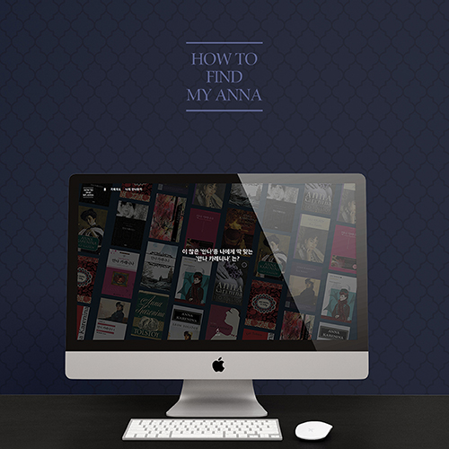
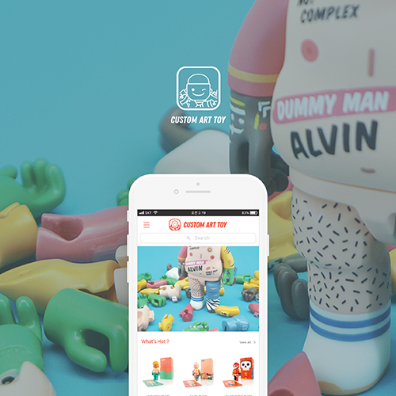

Web Design Studio HOW TO FIND MY ANNA
서점에 가서 책을 고를때 같은 제목의 수 많은 책들을 보고 ‘이 많은 책들중
내가 읽기 편한 책을 알려주는 콘텐츠가 있으면 어떨
까’ 라는 생각에서 시작되었다. 러시아 작가 레프 톨
스토이의‘안나 카레니나’의대표적인 번역가들이 번
역한 책들의 특징과성격, 느낌을 정리하여 이 책을 읽
기 전 자신에게 맞는 책을 고를 수 있도록 도와주는 사
이트 이다.

Interactive Media CUSTOM ART TOY
부담스럽지 않으면서 컬렉터의 수집욕을 채워주는 개성
있는 아트토이는 없을까?’ 라는 질문에서 시작한 ‘CUS
TOM ART TOY’ 앱은 구매자의 취향에 따라 헤어, 머
리, 몸통, 팔과 다리 신발 등 세분화된 파츠를 직접골라
커스텀하여 주문할 수 있는 아트토이 주문 앱이다.

Multimedia Design
신발 베스트셀러
신발의 모든 것. 유명 신발 브랜드의 베스트셀러를 자동차로 풀어낸 정보시각화입니다.
신발의 출시일, 용도, 가격, 소재 등 11가지의 정보를 수집하고 수치에 따라 나눈 데이터를 자동차 파츠로 조합하여 다양한 디자인의 자동차 모델로 재탄생시켰습니다.